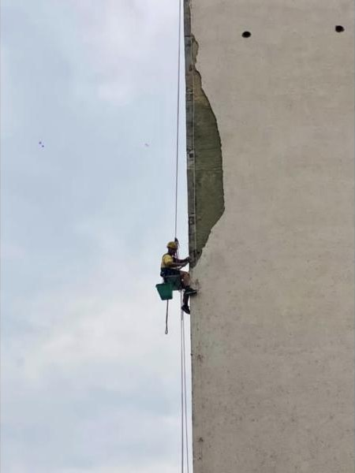
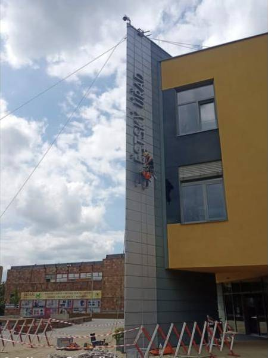
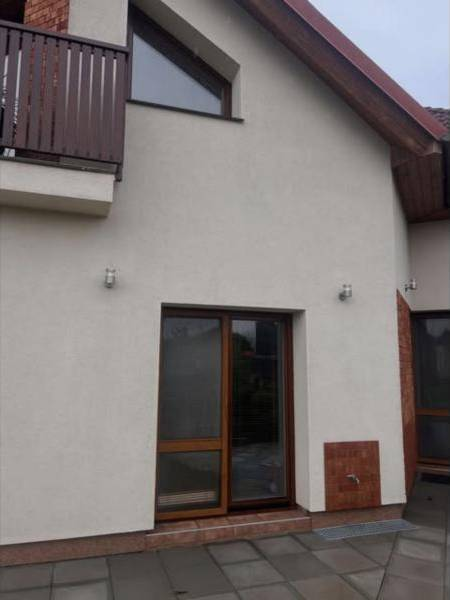
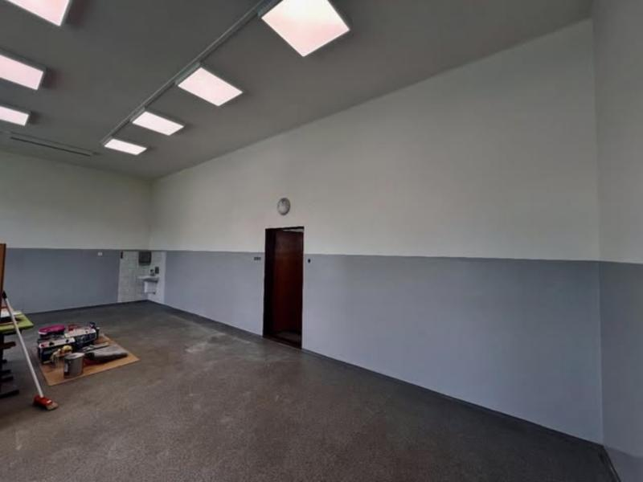
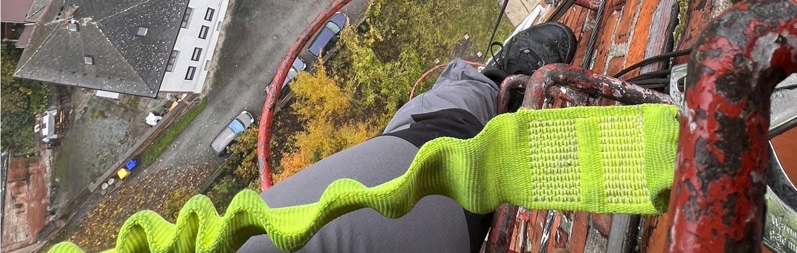
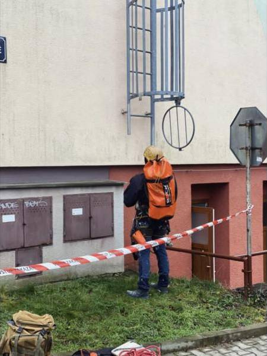
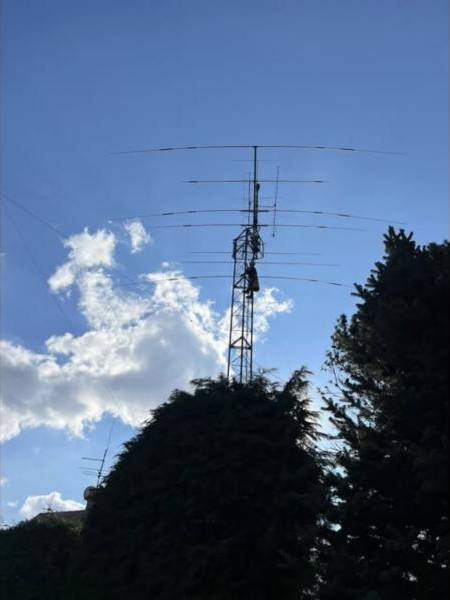
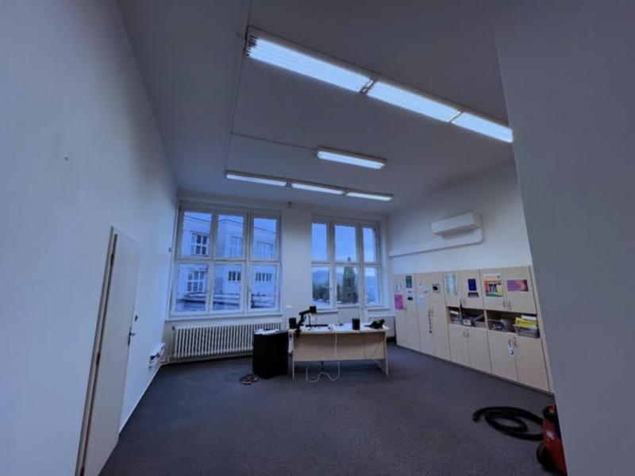

Nátěry
střech
a fasádz lana i ze země
Natřeme střechu, vyčistíme a natřeme fasádu, vymalujeme interiér. Kam se nedostanete po žebříku, tam slaníme.
Zavolejte735 057 191
Helma ✓ Jištění ✓
-
01
Nátěry
střechPlechové i eternitové střechy. Očistíme, ošetříme rez a natřeme, aby střecha zase roky vydržela.Plech / eternit / žlaby a svody
-
02
Čištění
fasádZašedlá, zelená nebo začouzená fasáda. Umyjeme ji i ve výškách, kam se žebřík nedostane.Mytí / řasy a plísně / výškové budovy

-
03
Nátěry
fasádRodinné domy, bytovky i firemní budovy. Připravíme podklad, opravíme praskliny a natřeme.Domy / bytové domy / opravy omítek

-
04
Malování
interiérůMalování a nátěry v bytech, kancelářích, dílnách i školách. Po sobě uklidíme.Malování / sokly / haly

S lešením
- Postavit lešenídny
- Pronájem na celou dobuplatíte
- Zabraný chodník a zahradatýdny
- Rozebrat a odvéztdny
Z lana
- Ukotvit lanahodiny
- Pronájem lešeníodpadá
- Ohrazený jen pruh pod námipo dobu práce
- Sbalit a odjethodina

Pohled z pracoviště / průmyslový komínTlumič pádu ✓
Kam lešení nedosáhne, dosáhne lano.
Obří obilná sila
Silo se nemusí stavět do lešení. Slaníme z vrcholu, vyčistíme, opravíme beton a natřeme. Provoz kolem přitom omezíme co nejméně.



Pár fotek střechy nebo fasády z mobilu a adresa. Hned řekneme, jestli to jde z lana.
Prohlédneme povrch na místě a pošleme nezávaznou nabídku i termín.
Zajistíme prostor, práci dokončíme a odvezeme všechno, co jsme přivezli.
Doma na Náchodsku
Náchod / Hronov / Nové Město nad Metují / Červený Kostelec / Police nad Metují / Broumov / Jaroměř / Česká Skalice / Trutnov / Hradec Králové
Q1Kolik stojí nátěr střechy nebo fasády?+
Záleží na ploše, stavu povrchu a přístupu. Pošlete fotky a rozměry, řekneme orientační cenu. Přesnou nabídku dostanete po prohlídce.
Q2Opravdu nepotřebujete lešení?+
U většiny střech, fasád a komínů ne. Kde lano nedává smysl, řekneme to rovnou a navrhneme jiné řešení.
Q3Je práce z lana bezpečná?+
Pracujeme vždy s helmou a jištěním a prostor pod námi ohradíme. Sousedé i kolemjdoucí jsou v bezpečí.
Q4Kdy se dá natírat střecha?+
Od jara do podzimu za suchého počasí a při teplotách, které povoluje výrobce barvy. Termín se vyplatí domluvit dopředu.
Q5Uděláte i menší práci?+
Ano. Výměnu žlabu, díru po ptácích nebo sníh ze střechy klidně spojíme s jinou zakázkou v okolí.